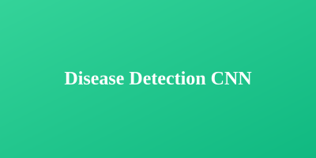
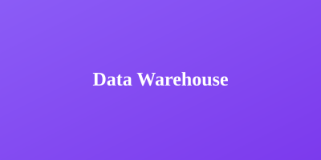
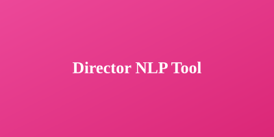
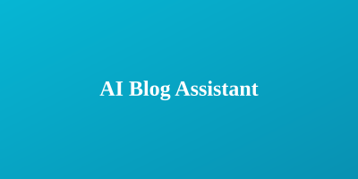
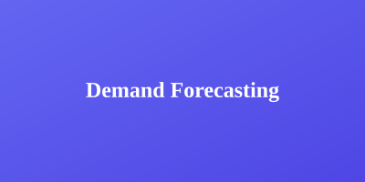
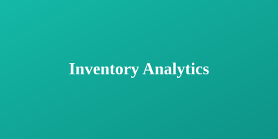

Profile
About Me
I am a final-year Data Science undergraduate at SLIIT with hands-on experience in data analytics, machine learning, and data engineering. My work focuses on building useful data solutions with Python, SQL, Power BI, Microsoft Fabric, REST APIs, and modern BI tools.
I have worked on data preprocessing, model development, dashboard automation, forecasting, and data warehouse projects. I am interested in AI, data engineering, business intelligence, and machine learning solutions that support better decision-making.
Career Focus
Data Engineering, AI/ML, BI, Data Analytics
Core Tools
Python, SQL, Power BI, Microsoft Fabric
Work
Professional Experience
Trainee Data Engineer
SAS Creative | Jun 2025 - Dec | OnsiteSupporting demand planning, data warehouse, and Power BI projects for stock and sales reporting. Working with Microsoft Fabric, medallion architecture, data pipelines, reporting models, and dashboards for inventory movement, product performance, and sales trends.
Intern Data Analyst
Mobitel Head Office | Nov 2024 - May 2025 | OnsiteConducted time series analysis on telecom data, built automated data pipelines, collected macroeconomic indicators using web scraping, developed vegetable price forecasting models, and completed personnel profile analysis to identify director-company relationships.
Portfolio
Featured Projects
AI-Powered Interview Training Voice Bot
Developed an AI-driven interview preparation system using Retrieval-Augmented Generation to generate role-specific interview questions from uploaded job descriptions. Integrated Wav2Vec2 speech emotion recognition to analyze confidence and emotional stability.

Cinnamon Leaf Disease Detection Using CNN
Built a convolutional neural network model to detect and classify diseases in cinnamon leaves using image data. Applied preprocessing, data augmentation, and hyperparameter tuning to achieve high classification accuracy.
Vegetable Price Forecasting
Built predictive models using historical vegetable prices and economic indicators to forecast future prices. Applied advanced time series methods including VAR, VECM, and ARDL models.

Data Warehousing and Power BI Dashboard
Designed a snowflake-schema data warehouse using REST APIs, JSON, Microsoft Fabric, and Power BI. Built comprehensive reporting dashboards for business analysis and operational insights.

Company Director Extract Using NLP
Developed a web scraping and NLP tool to extract company director names from CSE-listed company websites. Analyzed director-company relationships to identify key influencers for strategic partnerships.

AI Blog Assistant
Developed a Streamlit-based AI web application to generate blog posts based on user-provided titles and keywords. Leveraged generative AI to support content creation and topic-based writing workflows.

Enterprise Demand Forecasting System
Built forecasting solutions using Prophet, XGBoost, Theta, and TSB models to predict demand and support inventory planning. Implemented ensemble methods for improved accuracy.

Enterprise Inventory Analytics Platform
Developed inventory analytics and reporting solutions using Microsoft Fabric, REST APIs, Power BI, and ETL pipelines. Designed dashboards for real-time inventory visibility.
Expertise
Skills & Technologies
Background
Education
Sri Lanka Institute of Information Technology (SLIIT)
2022 - 2026BSc (Hons) Information Technology
Specialization: Data Science
Final-year undergraduate program with focus on data science, machine learning, and advanced data analytics. Completed projects in AI/ML, data engineering, and business intelligence.
Ferguson High School, Rathnapura
2012 - 2020G.C.E Advanced Level
Stream: Science (Mathematics, Physics, Chemistry)
Strong foundation in physical sciences and mathematics with consistent academic performance.
Credentials
Certifications & Achievements
AI / ML Engineer Stage 1
SLIIT
2024
AI / ML Engineer Stage 2
SLIIT
2024
Data Science Foundation
Great Learning
2024
Python Basic
HackerRank
2024
Power BI for Beginners
Simplilearn
2024
Introduction to Data Analytics
Simplilearn
2024
AWS Academy Cloud Foundations
AWS Academy
In Progress
Connect